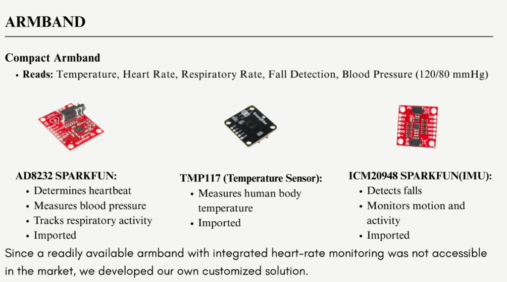
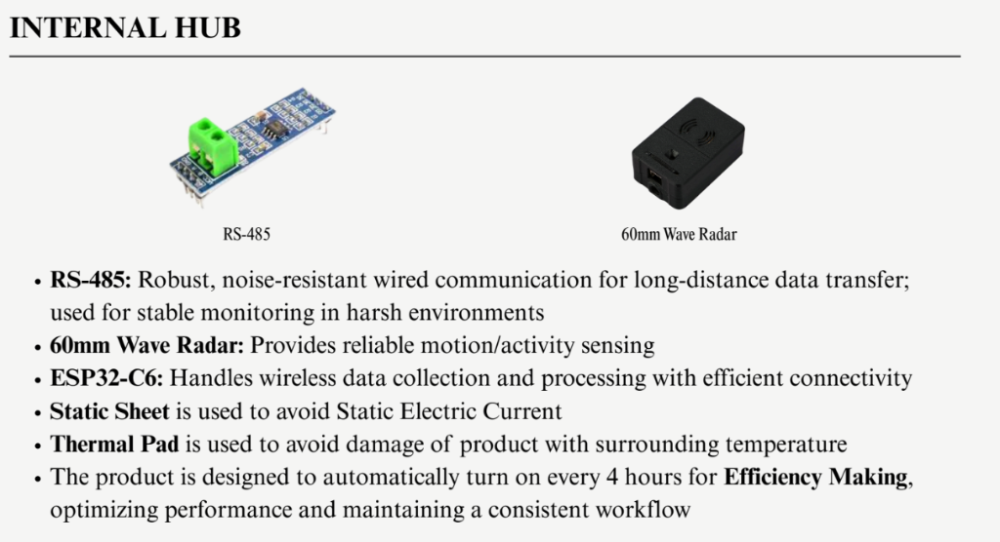
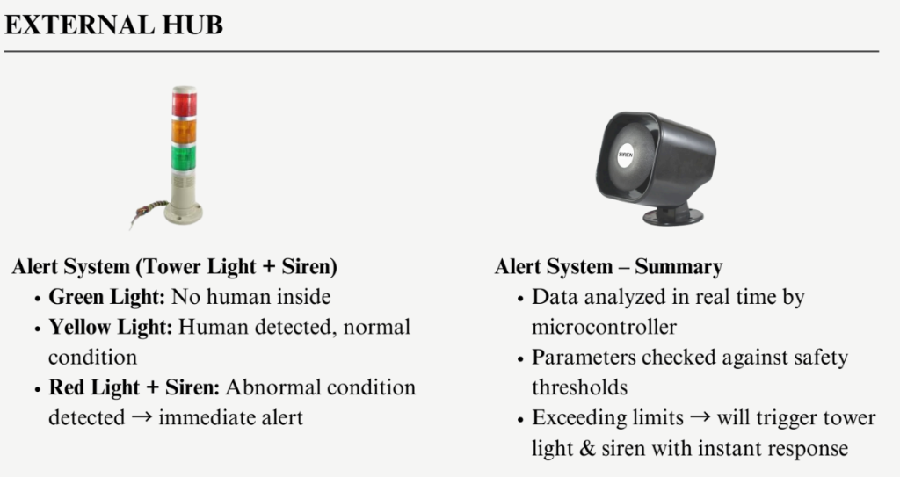

An IoT-based, edge-intelligent health monitoring solution designed to protect industrial workers operating in extreme, sealed, and hazardous environments.
In many industrial settings, especially cold chambers (–20 °C) and sealed zones, workers operate with minimal supervision. Traditional safety methods are reactive and fail to detect emergencies in time.
A multi-tier, wearable-centric safety architecture that shifts industrial safety from reactive monitoring to proactive prevention.

A lightweight, non-intrusive armband designed for continuous industrial use.

The central hub acts as the local intelligence layer inside the hazardous environment.

Located outside the hazardous zone, this hub ensures clear and immediate human awareness.
Green Light: Worker condition normal
Yellow Light: Warning (temp drop, stillness)
Red Light + Buzzer: Emergency (fall, critical vitals)
Engineered for environments where standard wireless systems fail.
Supervisors can access a web-based dashboard that provides:
Developed within the Live-In-Labs program at Sri Sairam Engineering College, Aegis has undergone rigorous testing to ensure reliability in hostile environments.
The system has been validated for continuous operation in sub-zero conditions, a specific requirement for blast freezers and cold storage units.
Overcoming the Faraday cage effect of sealed metal chambers.
| Feature | Traditional Safety Button | Camera Systems | Aegis Solution |
|---|---|---|---|
| Detection Method | Manual Press (Reactive) | Visual AI (Line of Sight required) | Automated Vitals & Fall Detection |
| Connectivity | Wired (Fixed location) | CCTV / Wi-Fi | Wired-Wireless Hybrid Mesh |
| Offline Capability | Yes | Dependent on Server | Yes (Edge Computing) |
| Health Monitoring | None | None | Medical-grade 3-Lead ECG |
| Cost | Low | High | Medium (High ROI) |
The design approach and system architecture of Aegis Solution have been shaped through exposure to industry-grade engineering practices, including technical insights and reference frameworks studied from Delphi–TVS Technologies.
This exposure helped align the solution with real-world automotive and industrial safety standards, influencing decisions related to system reliability, modularity, and safety-focused design thinking.
Referenced for industry-aligned system design practices